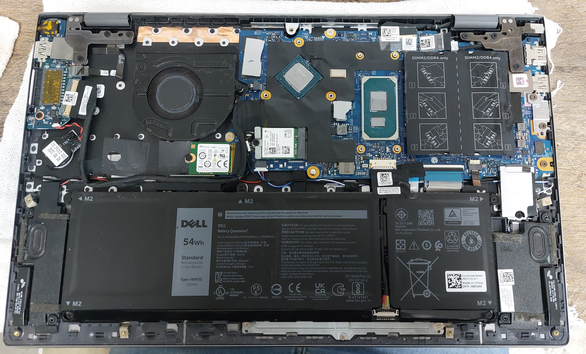

Introdução
É normal que um notebook aqueça durante o uso, principalmente ao executar jogos, programas pesados, chamadas de vídeo ou várias tarefas ao mesmo tempo. O problema começa quando o calor se torna excessivo, o equipamento perde desempenho, apresenta ruídos incomuns ou desliga sozinho.
O superaquecimento pode estar relacionado ao acúmulo de poeira, falhas no sistema de refrigeração, pasta térmica ressecada, uso em superfícies inadequadas ou até problemas de configuração. Ignorar esses sinais pode reduzir a vida útil dos componentes e provocar falhas mais sérias.
Neste artigo, você vai entender por que o notebook esquenta, quais sinais merecem atenção, o que pode ser feito com segurança e quando é recomendável procurar assistência técnica.
Entendendo o problema
Todo notebook gera calor durante o funcionamento. O processador (CPU), a placa de vídeo (GPU), a memória e outros componentes eletrônicos consomem energia e, naturalmente, produzem calor. Para manter a temperatura em níveis seguros, o equipamento utiliza um sistema de refrigeração composto por dissipadores, heatpipes, pasta térmica e ventoinhas (coolers).
Quando esse sistema não consegue dissipar o calor adequadamente, a temperatura interna aumenta além do esperado. Como mecanismo de proteção, o notebook reduz automaticamente o desempenho para evitar danos aos componentes. Em situações mais críticas, ele pode desligar sozinho para impedir o superaquecimento.
Quando o aquecimento deixa de ser normal?
Durante atividades mais exigentes, como jogos, edição de vídeos, modelagem 3D ou execução de diversos programas simultaneamente, é esperado que a temperatura do notebook aumente. No entanto, alguns sinais indicam que existe um problema que merece atenção.
- O notebook fica muito quente mesmo em tarefas simples.
- As ventoinhas permanecem em alta rotação por longos períodos.
- O equipamento perde desempenho repentinamente.
- Travamentos começam a acontecer com frequência.
- O notebook desliga sozinho durante o uso.
- Ruídos anormais vindos do cooler.
Esses sintomas nem sempre significam defeito grave, mas indicam que uma inspeção preventiva pode evitar problemas maiores e aumentar significativamente a vida útil do equipamento.
As principais causas do superaquecimento
Diversos fatores podem fazer um notebook trabalhar acima da temperatura ideal. Em muitos casos, o problema não está relacionado a um defeito grave, mas sim à falta de manutenção preventiva ou a hábitos de uso que dificultam a dissipação do calor.
1. Acúmulo de poeira
Com o tempo, a poeira se acumula nas entradas de ar, nas ventoinhas e no dissipador de calor. Esse acúmulo reduz significativamente a circulação de ar, fazendo com que o sistema de refrigeração trabalhe com menor eficiência.
2. Pasta térmica ressecada
A pasta térmica é responsável por transferir o calor do processador para o dissipador. Após alguns anos de uso, ela pode perder suas propriedades, dificultando essa transferência e aumentando a temperatura do equipamento.
3. Cooler com desgaste ou defeito
As ventoinhas possuem rolamentos e componentes mecânicos que sofrem desgaste natural. Ruídos incomuns, baixa rotação ou interrupções no funcionamento podem indicar que o cooler precisa de manutenção ou substituição.
4. Uso em superfícies inadequadas
Utilizar o notebook sobre camas, sofás, cobertores ou almofadas pode bloquear completamente as entradas e saídas de ar. Isso impede a ventilação correta e faz a temperatura subir rapidamente.
5. Excesso de programas em execução
Muitos aplicativos funcionando ao mesmo tempo aumentam o consumo do processador, da memória e, em alguns casos, da placa de vídeo. Quanto maior a carga de trabalho, maior será a geração de calor.
6. Temperatura ambiente elevada
Em dias muito quentes ou em ambientes sem ventilação adequada, o notebook tem mais dificuldade para dissipar o calor produzido internamente, o que contribui para o aumento da temperatura.
Como evitar o superaquecimento do notebook
A melhor forma de evitar problemas relacionados ao calor é adotar alguns cuidados simples no dia a dia. Além de reduzir a temperatura, essas práticas ajudam a aumentar a vida útil do notebook e a manter seu desempenho por mais tempo.
- Utilize o notebook sempre sobre superfícies planas e rígidas para não bloquear as entradas e saídas de ventilação.
- Evite utilizar o equipamento sobre camas, sofás, cobertores ou almofadas, pois esses materiais dificultam a circulação de ar.
- Faça limpezas preventivas periodicamente para remover poeira acumulada nas ventoinhas e no sistema de refrigeração.
- Mantenha o sistema operacional, drivers e BIOS atualizados sempre que possível, pois algumas atualizações melhoram o gerenciamento térmico do equipamento.
- Feche programas que não estão sendo utilizados e evite manter muitos aplicativos abertos ao mesmo tempo sem necessidade.
- Utilize bases refrigeradas apenas como complemento. Elas podem ajudar na circulação de ar, mas não resolvem problemas internos de refrigeração.
- Caso perceba aumento constante da temperatura, procure assistência técnica antes que o problema evolua e cause danos permanentes aos componentes.
Pequenas ações preventivas costumam ser muito mais econômicas do que a substituição de peças danificadas pelo excesso de calor.

Quando procurar assistência técnica ?
Algumas situações podem ser resolvidas com mudanças simples nos hábitos de uso, como melhorar a ventilação do notebook ou fechar programas desnecessários. No entanto, quando o superaquecimento persiste mesmo após esses cuidados, é recomendável procurar assistência técnica especializada.
Uma avaliação profissional permite identificar a causa exata do problema e evita que componentes importantes, como processador, placa-mãe, memória ou SSD, sejam danificados pelo excesso de temperatura.
Sinais de que é hora de procurar ajuda
- O notebook desliga sozinho com frequência.
- O equipamento apresenta perda significativa de desempenho.
- As ventoinhas fazem muito barulho ou deixam de funcionar corretamente.
- O notebook fica extremamente quente mesmo em tarefas simples.
- A temperatura continua elevada mesmo após limpeza externa.
- Há mensagens de erro relacionadas ao sistema de refrigeração ou à BIOS.
- Você percebe cheiro de queimado ou aquecimento excessivo na fonte de alimentação.
Evitar o uso contínuo nessas condições reduz o risco de danos permanentes e pode diminuir significativamente o custo de um eventual reparo.
Conclusão
O aquecimento faz parte do funcionamento normal de qualquer notebook, mas quando a temperatura aumenta de forma excessiva ou surgem sintomas como travamentos, perda de desempenho e desligamentos inesperados, é importante investigar a causa o quanto antes.
Cuidados simples, como manter o sistema de ventilação limpo, utilizar o notebook em superfícies adequadas e realizar manutenções preventivas periodicamente, contribuem para aumentar a vida útil do equipamento e evitar gastos com reparos mais complexos.
Se você identificou algum dos sinais apresentados neste artigo e não se sente seguro para realizar uma verificação por conta própria, procure uma assistência técnica de confiança para fazer um diagnóstico adequado.
Perguntas frequentes
É normal o notebook esquentar?
Sim. Todo notebook aquece durante o funcionamento. O problema ocorre quando a temperatura fica excessiva, há perda de desempenho ou desligamentos inesperados.
Posso usar o notebook sobre a cama?
Não é recomendado. Superfícies macias bloqueiam as entradas de ar e dificultam a refrigeração do equipamento.
Quando devo fazer uma limpeza preventiva?
Em média, a cada 12 a 24 meses, dependendo do ambiente e da intensidade de uso do notebook.
Uma base refrigerada resolve o problema?
Ela pode ajudar na circulação de ar, mas não substitui uma limpeza interna ou a manutenção do sistema de refrigeração quando há poeira acumulada ou falhas no cooler.
Como saber se preciso trocar a pasta térmica?
Apenas uma avaliação técnica pode confirmar a necessidade da troca. Em muitos casos, ela faz parte da manutenção preventiva após alguns anos de uso.